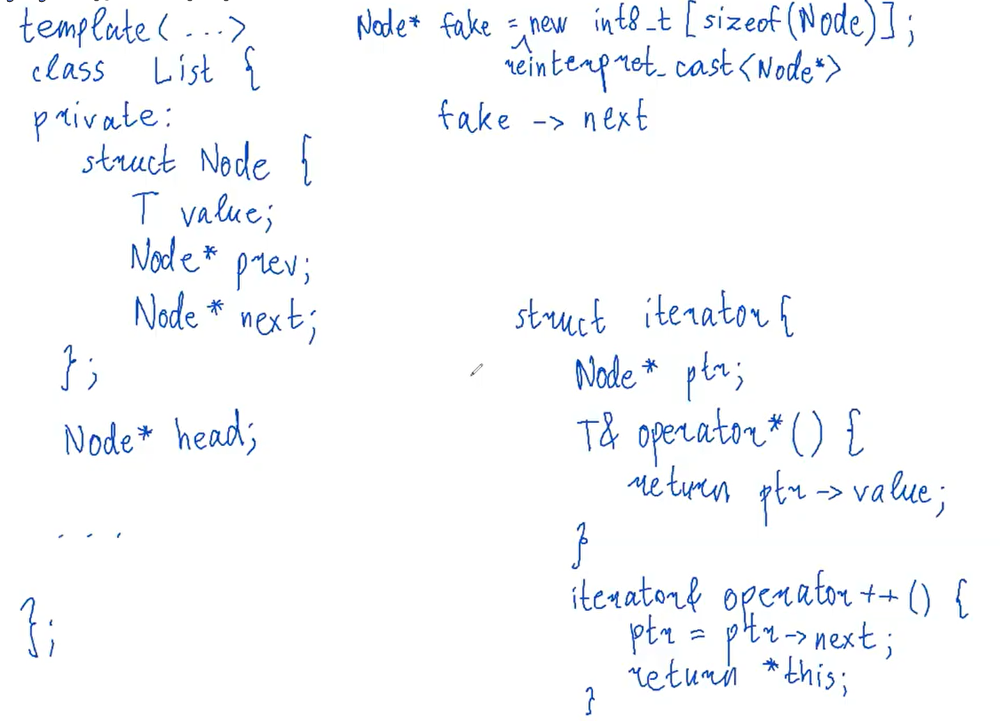
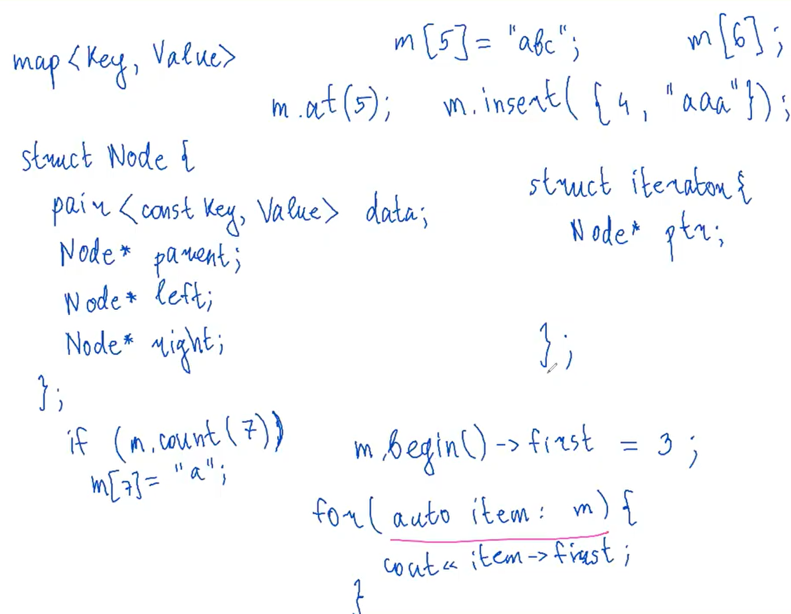

2023
Контейнеры делятся на две группы: последовательные (sequence) и ассоциативные (associate).
| контейнер | описание | индексация [] |
push_back() / push_front() |
insert() 1 |
erase() |
find() |
iterator_category |
|---|---|---|---|---|---|---|---|
| vector | динамический массив | O(1) | O(1) 2 | O(n) | O(n) | - | RandomAccessIterator |
| deque 3 | двусторонняя очередь | O(1) | O(1) | O(n) | O(n) | - | RandomAccessIterator |
| list | двусвязный список | - | O(1) | O(1) | O(1) | - | BidirectionalIterator |
| forward_list | односвязный список | - | O(1) | O(1) | O(1) | - | ForwardIterator |
| контейнер | описание | индексация [] |
push_back() / push_front() |
insert() 4 |
erase() |
find() |
iterator_category |
|---|---|---|---|---|---|---|---|
| set | множество | O(log(n)) 5 | - | O(log(n)) | O(log(n)) | O(log(n)) | BidirectionalIterator |
| map | словарь | O(log(n)) 6 | - | O(log(n)) | O(log(n)) | O(log(n)) | BidirectionalIterator |
| unordered_set | неупорядоченное множество | O(1) 7 | - | O(1) 8 | O(1) 9 | O(1) 10 | ForwardIterator |
| unordered_map | неупорядоченный словарь | O(1) 11 | - | O(1) 12 | O(1) 13 | O(1) 14 | ForwardIterator |
vector#include <iostream>
#include <iterator>
#include <type_traits>
#include <memory>
using std::initializer_list;
template <bool Cond, typename T, typename T_>
struct conditional {
using type = T_;
};
template <typename T, typename T_>
struct conditional<true, T, T_> {
using type = T;
};
template <bool Cond, typename T, typename T_>
using conditional_t = typename conditional<Cond, T, T_>::type;
template <typename T>
class Vector {
private:
size_t cap = 0;
size_t sz = 0;
T* arr;
public:
Vector(
size_t capacity,
const T& default_value = T()
): cap(capacity), sz(capacity), arr(reinterpret_cast<T*>(new int8_t[cap * sizeof(T)])) {
for (size_t i = 0; i < sz; ++i) {
arr[i] = default_value;
}
}
Vector(initializer_list<T> lst): cap(lst.size()), sz(lst.size()), arr(reinterpret_cast<T*>(new int8_t[cap * sizeof(T)])) {
std::copy(lst.begin(), lst.end(), arr);
}
~Vector() {
delete[] arr;
}
void swap(Vector& v) {
std::swap(v.sz, sz);
std::swap(v.arr, arr);
}
Vector& operator=(Vector v) {
swap(v);
return *this;
}
size_t size() const {
return sz;
}
size_t capacity() const {
return cap;
}
void reserve(size_t size) {
if (size <= cap) { return; }
// почему не new T[size]?
// потому что не хотим вызывать дефолтный конструктор у объекта:
// нужна только память под него
T* newarr = reinterpret_cast<T*>(new int8_t[size * sizeof(T)]);
// new(address) Object(); // позволяет вызвать конструктор Object() по адресу address
/*for (size_t i = 0; i < sz; ++i) {
new(newarr + i) T(arr[i]); // новый синтаксис
// позволяет положить по адресу newarr + i
// скопированный из arr[i] объект
// вообще использовать конструктор копирования невыгодно
// и начиная с C++11 есть конструкция move
// но про нее будет отдельная большая тема */
// в коде выше существует еще проблема:
// при копировании объекта может быть брошено исключение
// и если это случилось, то нужно все вернуть как было
// для такой проверки существует функция std::uninitialized_copy
// https://en.cppreference.com/w/cpp/memory/uninitialized_copy
std::uninitialized_copy(arr, arr + sz, newarr);
for (size_t i = 0; i < sz; ++i) {
(arr + i)->~T(); // явно вызываем деструктор
// потому что если написать delete[] arr
// то будет вызван деструктор объекта, которого, возможно, нет
}
// очищаем массив
delete[] reinterpret_cast<int8_t*>(arr);
cap = size;
arr = newarr;
}
void resize(size_t size, const T& value = T()) {
reserve(size);
if (size >= sz) {
for (size_t i = sz; i < size; ++i) {
arr[i] = value;
}
} else {
for (size_t i = size; i < sz; ++i) {
(arr + i)->~T();
}
}
sz = size;
}
void shrink_to_fit() {
resize(size);
}
Vector& operator=(initializer_list<T> lst) {
reserve(lst.size());
std::copy(lst.begin(), lst.end(), arr);
sz = lst.size();
return *this;
}
T& operator[](size_t index) {
return arr[index];
}
const T& operator[](size_t index) const {
return arr[index];
}
T& at(size_t index) {
if (index >= sz) { throw std::out_of_range("List index out of range."); }
return arr[index];
}
const T& at(size_t index) const {
if (index >= sz) { throw std::out_of_range("List index out of range."); }
return arr[index];
}
void push_back(const T& value) {
// sz += 1;
// reserve(sz);
// arr[sz - 1] = value;
if (sz == cap) { reserve(2 * sz); }
new(arr + sz) T(value);
++sz;
}
void pop_back() {
(arr+sz)->~T();
--sz;
}
template <bool IsConst>
class common_iterator {
private:
conditional_t<IsConst, const T*, T*> ptr;
public:
common_iterator(T* ptr): ptr(ptr) {}
conditional_t<IsConst, const T&, T&> operator*() {
return *ptr;
}
common_iterator& operator++() {
++ptr;
return *this;
}
};
using iterator = common_iterator<false>;
using const_iterator = common_iterator<true>;
iterator begin() const {
return iterator(arr);
}
iterator end() const {
return iterator(arr + cap);
}
void print() {
for (size_t i = 0; i < cap; ++i) {
std::cout << arr[i] << " ";
}
std::cout << "\n";
}
};
int main() {
Vector<int> v(3);
v = {1, 2, 3, 4, 5};
v.push_back(90);
std::cout << v[5] << "\n";
}Пока реализация на четверочку. Чтобы было совсем хорошо нужно
использовать аллокаторы для выделения памяти и move для перемещения объектов 15.
Но по этим темам будут отдельные пары.
vector<bool>Вектор из bool устроен не так как вектор из
других типов, потому что не нужно хранить байт(один bool) для каждого элемента вектора вектора.
Какой тип у переменных вектора из булей?
#include <iostream>
#include <vector>
template <typename T>
void f(const T&) = delete; // запретим вызов функции,
// чтобы компилятор назвал тип переменной
int main() {
std::vector<bool> vb(7, true);
f(vb[5]); // хотим тип vb[5]
}Компилятор пишет, что тип переменной std::_Bit_reference.
Напишем реализацию вектора булей:
template <>
class Vector<bool> {
private:
size_t sz;
size_t cap;
int8_t* arr;
public:
Vector(size_t sz, bool default_value): sz(sz), cap(sz / 8 + ((sz % 8 != 0) ? 1 : 0)), arr(new int8_t[sz / 8 + ((sz % 8 != 0) ? 1 : 0)]) {
if (default_value) {
for (size_t i = 0; i < cap; ++i) {
arr[i] |= 11111111u;
}
} else {
for (size_t i = 0; i < cap; ++i) {
arr[i] &= 0u;
}
}
}
~Vector() {
delete[] arr;
}
struct BitReference {
int8_t* cell;
uint8_t pos;
BitReference(int8_t* cell, uint8_t pos): cell(cell), pos(pos) {}
operator bool() {
return *cell & (1u << pos);
}
BitReference& operator=(bool value) {
if (value) {
*cell |= (1u << pos);
} else {
*cell &= ~(1u << pos);
}
return *this;
}
};
BitReference operator[](size_t index) {
return BitReference(arr + index / 8, index % 8);
}
const BitReference operator[](size_t index) const {
return BitReference(arr + index / 8, index % 8);
}
};
int main() {
Vector<bool> v(7, true);
v[6] = false;
bool value = v[6];
if (value) {
std::cout << "true value\n";
} else {
std::cout << "false value\n";
}
}std::deque#include <iostream>
#include <deque>
int main() {
std::deque<int> d = {1, 2, 3, 4, 5};
std::cout << d[0] << "\n";
d.push_back(9);
d.push_front(11);
std::cout << d[0] << "\n";
std::cout << d[6] << "\n";
}Я могу читать код
stl!!! 🎉🎉🎉🎉🎉
Quite a bit of intelligence here. 16
std::stack, std::queue
и std::priority_queuestackСтэк - это обертка над любым контейнером, поддерживающим методы push_back(), back() и pop_back().
#include <iostream>
#include <deque>
template <typename T, typename Container = std::deque<T>>
class Stack {
private:
Container c;
public:
bool empty() const {
return c.empty();
}
size_t size() const {
return c.size();
}
T& top() {
return c.back();
}
const T& top() const {
return c.back();
}
void push(const T& __x) {
c.push_back(__x);
}
void pop() {
c.pop_back();
}
};
int main() {
Stack<int> s;
s.push(6);
std::cout << s.top() << "\n";
}std::queueКак стэк только вместо top() метод front() и pop() делает pop_front().
#include <iostream>
#include <deque>
template <typename T, typename Container = std::deque<T>>
class Queue {
private:
Container c;
public:
bool empty() const {
return c.empty();
}
size_t size() const {
return c.size();
}
T& front() {
return c.front();
}
const T& front() const {
return c.front();
}
T& back() {
return c.back();
}
const T& back() const {
return c.back();
}
void push(const T& __x) {
c.push_back(__x);
}
void pop() {
c.pop_front();
}
};
int main() {
}std::priority_queueПочти как очередь. В шаблонные параметры добавлен компаратор comp и после каждой вставки выполняется std::push_heap(c.begin(), c.end(), comp);.
std::listСвязный список.

#include <iostream>
int main() {
}std::set и std::mapВ std::map ключи упорядочены.

std::unordered_mapХэш-таблица на цепочках.
От итератора и значения.
#include <iostream>
#include <vector>
int main() {
std::vector<int> v = {1, 2, 3, 4, 5};
std::cout << v[0] << "\n";
v.insert(v.begin(), 8);
std::cout << v[0] << "\n";
}Амортизированная, т.к. требуется перевыделение памяти. У
вектора нет метода push_front()↩︎
Читается «дек»↩︎
От итератора и значения.
#include <iostream>
#include <vector>
int main() {
std::vector<int> v = {1, 2, 3, 4, 5};
std::cout << v[0] << "\n";
v.insert(v.begin(), 8);
std::cout << v[0] << "\n";
}Красно-черное дерево.↩︎
Красно-черное дерево.↩︎
В среднем.↩︎
В среднем.↩︎
В среднем.↩︎
В среднем.↩︎
В среднем.↩︎
В среднем.↩︎
В среднем.↩︎
В среднем.↩︎
Вместо использования конструктора копирования.↩︎
Просто лучшие. Вы что гении?↩︎